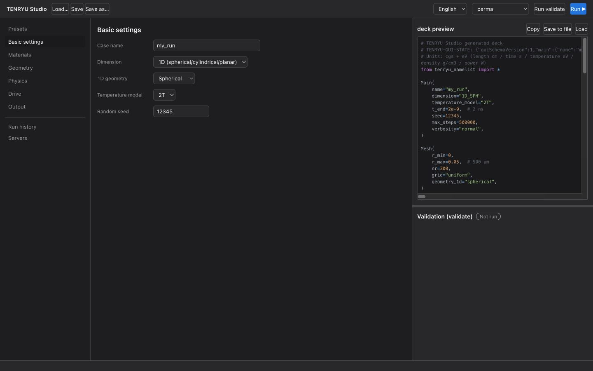

TENRYU Studio (GUI) reference
TENRYU Studio is a macOS desktop application that creates a TENRYU deck, the Python file in the namelist format that is the input of TENRYU, through a form. It generates the deck live as inputs change and brings validation, saving, and execution on a compute server reached over SSH into one workspace. A saved deck also carries its form state, so a configuration can move between code and the GUI without a separate project file. Terms specific to Studio are defined in the terms section.
The GUI manual is a separate document set shipped under gui/manual/ and bundled with this site; use the buttons above (or the “GUI manual” link in the top bar) to open it.
Obtaining and launching
Studio ships inside the repository's gui/ directory (there is no standalone distribution). The core of Studio is a pure web application; in the Mac native app, a Tauri 2 shell wraps it and launches the system ssh and scp. The app is built on a Mac and needs the Node.js and Rust toolchains. Run the following in gui/.
npm ci
npm run tauri buildThe app is produced at gui/src-tauri/target/release/bundle/macos/TENRYU Studio.app. It is not signed or notarized by Apple. When macOS refuses to open an app built by someone else the first time, right-click the app in Finder and choose “Open”.
For a development launch, run npm install in gui/, then run npm run bridge and npm run dev (the Vite dev server, http://localhost:5173) side by side and open it in a browser. npm run bridge is the development bridge (gui/dev-bridge/server.mjs) that launches ssh and scp in place of the Tauri shell; it listens on port 5175 of 127.0.0.1 only. See gui/README.md in the repository for the detailed procedure.
From form to run
Studio's left navigation follows the normal setup order: Presets, Basic settings, Materials, Geometry, Physics, Drive, and Output. Below a divider are the Run history, Servers, and Assistant views. The Geometry tab edits both the mesh and the initial regions (definition). The center pane contains the selected form, while in the form views the right pane shows the live deck, regenerated after every edit. Missing required values or inconsistent combinations produce errors in place; deck generation resumes after they are corrected. The live deck makes the TENRYU cgs + eV convention visible while editing: lengths are in cm, times in s, temperatures in eV, and densities in g/cm³.

The basic sequence is form → live deck → validate → save or run. A preset is a starting point, and every field remains editable after it is applied. Read the generated deck, resolve all validation errors, then save it to a file. The result is an ordinary Python deck: it can be run outside Studio with ./build/tenryu run deck.py and inspected in any text editor.
Terms used in Studio
The Studio screens and the decks that Studio saves use words that appear only in Studio. They are defined together here, with the meaning they have in the Studio implementation (gui/) and in the bundled assistant (tools/assist/). Texts shown on the Studio screens are quoted as displayed, in curly quotation marks. The physical terms cold equilibrium and the threshold measure of two-plasmon decay (TPD) are explained in the presets section.
Presets and the verification run
A preset is a template that sets all values of the form at once. Presets are shown as cards in the “Presets” view: 12 in the 1D tab (6 basic and 6 with optional kernels) and 5 in the 2D tab. Pressing “Apply this preset” on a card asks for confirmation; “Discard and apply” then replaces the entire current form and moves to “Basic settings”. A 1D card shows its title, badges, a description, the kernels, and the “Verification run”. There are three kinds of badge, and a card carries only those that apply: how the mesh was made, the material tables it needs, and how heavy the run is. They read “Recommended mesh” or “Per-layer table”, “Needs the tables …”, and “Heavy run (hours on one GPU)”. A preset lets one start from a setting close to the intended calculation instead of filling in the form from scratch.
A verification run is the result field “Verification run” on a preset card. It reports how far the preset deck, run to its end time, differs from the same setup run on a twice finer mesh. The twice finer mesh is the mesh of a deck in which the mass of every cell is halved. The compared quantities differ from preset to preset (absorbed energy, ablation pressure, ablated mass, stagnation time, peak density, and so on), and the smaller the differences, the better converged those quantities are on that mesh. The blank card and the 2D cards do not carry one. Studio's “Convergence pair” makes, from the deck in the form, a finer deck with twice the number of cells and the mass of every cell halved (the case name gets the suffix _fine), so that the same check can be made on one's own deck.
Geometry and the mesh method
Geometry is the name of a tab in the left navigation. The tab edits both the mesh of the namelist Mesh block (r_min, r_max, the mesh method, the cell count) and the initial conditions of the Geometry block (the outer radius, density, electron temperature, and ion temperature of each material region). In 1D, the switch that makes the space outside the last region vacuum and the settings of the corona ramp are also here. The 1D geometry (spherical, cylindrical, or planar; Mesh.geometry_1d) is chosen not in this tab but in “Basic settings”. The tab has the same name as the Geometry block but covers a wider range than the block.
The mesh method is one of six methods chosen in this tab for 1D, and the choice changes what is written into the deck. “Uniform” places nr cells of equal width (grid="uniform"). “Graded (segments and mass weighting)” places cells with a cell count per segment and a weight that refines the segment ends. “Recommended mesh (from the laser conditions)” writes zoning_intent and resolution_requirement. “Per-layer table” and “Imported node coordinates” write the node coordinates into explicit_nodes. “Declarative zoning (zoning_intent)” edits zoning_intent directly.
Recommended mesh and per-layer table
A recommended mesh is a mesh that the mesh recommender builds for a laser-driven 1D deck and validates with the solver on the server. The recommender is tools/assist/assist.py recommend-mesh, the same tool that the Claude Code skill tenryu-mesh-1d uses. When “Make the recommended mesh (server)” is pressed, Studio runs this tool on the selected server and puts the result into the form.
The tool first reads from the form the target layers (radius, density, material), the laser wavelength and waveform, the end time, the temperature model, and the radiation and conduction switches, and has the server's tenryu validate --mesh-preview read them to obtain how the solver sees the target. It then fixes an upper limit on the areal density of the surface cell from the results of mesh-convergence calculations (the bundled reference table tools/assist/data/mesh_convergence_reference.json). It builds a zoning_intent that satisfies this limit (the number of cells and a declaration that equidistributes a cell measure) and a resolution_requirement that imposes the limit on the solver (apply="enforce" and the empirical ceiling empirical on which the recommendation is based), and returns them after validating them with the server's tenryu. A recommendation that fails validation is not put into the form.
A recommended mesh is needed because, in laser-driven calculations, the size of the surface cell decides the absorption and ablation results. From the ablation rule and the shock-wave rule, the solver computes an upper limit on the cell size as the resolution requirement. The reference table records, per condition, the coarsest areal density at which the difference from the finest calculation falls within the tolerances (3 % in absorbed energy, 5 % in ablation pressure, 10 % in ablated mass, and 2 % in shock-breakout time), over nine calculations that refine the areal density of the surface cell by factors of 2 (from \(3.2\times10^{-5}\) g/cm² to \(1.25\times10^{-7}\) g/cm²). A recommendation is made for conditions within the range of this table. Outside the range, it uses a calibrated a priori limit and flags the result “extrapolation”; when the flag appears, check the convergence with a pair whose surface cell mass is halved.
A recommended mesh can be made only for a laser-driven 1D deck (the resolution requirement is set by the laser conditions). The recommender assumes a bare target surface, so it cannot be combined with a material corona ramp; use the laser's ghost corona instead (see 1D mesh). When the target, the drive, or the physics is changed after the mesh was made, Studio shows that the conditions have changed, and the mesh must be made again. The server needs a TENRYU checkout (tools/assist) in a directory above the tenryu binary, and python3 (3.9 or later).
A per-layer table is a mesh method in which the number of cells and the spacing are set for each layer (a material region, a corona ramp, or the vacuum outside). The spacing is “Equal width”, “Equal mass”, or “Geometric”. For a geometric spacing, the progression is set by the width ratio of adjacent cells, the width of the end cell, or the mass of the neighbouring layer's end cell, and the side with the finest cells (outer side, inner side, or both ends) is chosen. Studio computes the nodes and writes them into the deck as explicit_nodes, so the grid displayed is exactly the one used in the calculation. The defaults of a new layer are 40 cells, equal mass, a width ratio of 1.1, an end-cell width of \(10^{-5}\) cm (0.1 µm), and the finest cells on the outer side. It works with any drive (laser, radiation temperature, or pressure). Of the presets, the six laser-driven ones store a recommended mesh made for their conditions, and the five driven by a radiation temperature or a pressure use a per-layer table.
Validation
Studio uses “validation” in two senses.
Form validation is Studio's check of the form input, made on the spot at every edit. Missing required values or inconsistent combinations replace the deck in the right pane with a list of errors and stop deck generation and execution. It needs no server.
Server validation is run with “Run validate” in the header. Studio puts the generated deck at validate_scratch/<case name>.py under the run directory of the selected server and runs tenryu validate with that server's binary. tenryu validate reads the deck and checks the namelist (unknown keys, types, ranges, and combinations), checks that the time- and position-dependent functions return finite numbers at representative points (time 0 and the midpoint of the domain) and warns when they do not, and, for a 1D laser deck, judges the resolution requirement and fails when it is not met with apply="enforce". It does not compute any time evolution. The result is shown in the “Validation (validate)” panel at the lower right as a “Validation PASS” or “Validation FAIL” badge, a summary, errors, warnings, and the raw log. The timeout is 120 s. “Run validate” becomes available once the server and the path of the tenryu binary are set.
The “Verification run” of a preset (see Presets) is a different thing: a comparison of calculation results. Verification on the site's Verification & benchmarks page means tests of the solver itself and is separate from the Studio feature.
TENRYU-GUI-STATE, load, and import
TENRYU-GUI-STATE is a one-line comment, # TENRYU-GUI-STATE: {…}, that Studio places near the beginning of every deck it saves. The {…} is the entire form state as JSON, including the schema version guiSchemaVersion (currently 1). Being a Python comment, it is skipped by the solver. When Studio opens a deck that has this line, it restores the form from it without running the Python. Fields missing from JSON written by an older version are filled with the current defaults. A broken JSON or a different schema version makes the load fail.
Load is the operation of opening a deck file or pasting Python text: “Load…” in the header, “Load namelist…” in the menu (⌘O), and “Load” in the deck preview. A deck with TENRYU-GUI-STATE is restored as above, and one without it is imported.
Import is the processing, at load, of a deck without TENRYU-GUI-STATE (a deck written by hand or made by another tool). Studio evaluates the deck's Python. An evaluation runs the deck with a recording module in place of tenryu_namelist and records the arguments of each block call (Main, Mesh, Materials, and so on). Studio maps the recorded values onto the form fields, evaluates a deck regenerated from the form, compares it with the original deck, and summarizes the result in the import report. Import exists so that an existing deck can be edited in the form without losing the settings that the form cannot express. A deck that has been imported carries TENRYU-GUI-STATE once it is saved, and from then on it is restored as it is by a load.
Import report and sample points
The import report is the screen that opens automatically after an import (it can also be opened with “Deck import report” in the deck preview). It sorts every key of the evaluated deck into the following four categories. Each category heading carries a count, and each row gives the path of a key (for example Laser.beams.0.power) and the reason the key was put into that category. The headings read “Mapped to form”, “Recovered functions (sampling verified)”, “Preserved from source”, and “Omitted GUI defaults”. The line “Unsupported settings not preserved” at the end always shows “None” in the current implementation: a setting that the form cannot express is not dropped but goes into “Preserved from source”.
“Mapped to form” keys are those whose original values (numbers, strings, and Booleans) are held by the form fields and reproduced with the same value by the deck regenerated from the form. Floating-point numbers count as the same value when they agree within a relative \(10^{-12}\). The values of these keys are fixed in the form at import, and editing the form changes them.
“Recovered functions (sampling verified)” are values that the original deck wrote as Python functions (the laser power waveform, the initial density and temperature distributions, the radiation-temperature and pressure drive waveforms, and so on) and that could be recovered in a shape the form can express (a constant, a Gaussian, a square pulse, or a piecewise-linear table; for an initial distribution, a list of region-wise constant values), with the recovered function agreeing with the original at every sample point. A continuously varying initial distribution cannot be expressed in this shape, so it goes into “Preserved from source”.
“Preserved from source” keys are those that the form cannot reproduce with the same value: a value or function that does not match, a key that the form does not write (for example a value equal to the solver default that the original deck states explicitly), and a block that is called more than once. The saved deck re-runs the original Python at initialization to retrieve these values (deck_import_runtime.py). A form edit that conflicts with them makes deck generation fail. However, editing a field bound to a key that the form does not write replaces the original value with the field's value. Functions that could not be compared at the sample points are listed in a separate field in a warning color.
“Omitted GUI defaults” are keys that the original deck does not have but for which the form's default would be written. Studio does not add them, so the solver default applies to those keys. Editing a section that contains the corresponding field after the import may add the omitted GUI defaults.
A sample point is an argument at which the original function and the function regenerated from the form are compared. For functions of time (laser power, radiation temperature, boundary pressure, and so on), the points are 4097 equally spaced points from 0 to the end time t_end and the knots found from constants in the function together with the floating-point numbers just before and after them. For functions of position (the initial density and temperature distributions, and so on), they are 2049 equally spaced points over the domain, the mesh nodes, the cell centers, the cell centroids, and the region boundaries. The mesh nodes that the solver generates automatically (zoning_intent and auto_regions) are not included. The tolerance is \(10^{-12}\) times the larger absolute value of the two. Agreement at a finite number of points does not prove that two functions are the same: “Recovered functions (sampling verified)” states only that they agree at the sample points.
Server profile and venue
A server profile is the registration of a machine on which Studio validates and runs TENRYU. It is created in the “Servers” view, and the current one is chosen in the selector in the header. Its items are a display name, the connection type, the host (an alias in ~/.ssh/config is allowed), the user, the port, the identity file, “Ephemeral host” (it disables host-key checking for cloud pods), the absolute path of the TENRYU binary, and the run directory (the default is ~/tenryu_gui_runs). The connection type is “ssh” or “Local (development)”; only ssh works in the app, and the local type works only in the browser version through the development bridge. Studio stores no credentials and leaves them to the system ssh and ssh-agent. Because it connects in BatchMode (no interactive prompts), it needs public-key authentication that works without a password and a host key registered beforehand in known_hosts (except for an ephemeral host). The profiles, the run history, and the language setting are stored on the Mac in ~/Library/Application Support/jp.osaka-u.ile.tenryu-studio/tenryu-studio.json, and not in the deck or on the server. Without a selected profile, “Run validate” and “Run ▶” cannot be used.
The venue is the place where the deck's Python is evaluated at import: the local python3 or the selected server (“Import venue” on the screen). With a server, Studio sends the scripts used for the evaluation and the deck to a temporary directory under the profile's run directory, evaluates there, and deletes the directory afterwards. The default is the selected server if one is selected, and local otherwise. The working directory and the environment variables refer to the directory and the environment on the venue's side.
Run history
The run history is the list of calculations (runs) started from Studio, shown in the “Run history” view of the left navigation. “Run ▶” creates a directory named <case name>_<14-digit UTC date and time> under the run directory of the selected server, places the deck deck.py, the status file status.json, and the log run.log there, and starts tenryu run as a detached process. The default output directory of the deck is outputs/<case name>, which is created under the directory of this run. Studio reads status.json every 3 s and shows on the card of each run its state and its progress (time against the end time, the step, steps per second, and the elapsed time). There are seven states: Launching (the submission is in progress), Running, Stopping (a stop has been requested and the run is ending), Finished, Failed, Stopped (the run ended by a requested stop), and Unknown (the server profile of the run has been deleted). The card of a finished run has “Continue…”, “Delete record”, and “Results (history)”. Every card has “Open in Scope”, which hands the run to TENRYU Scope, a separate app for browsing runs and HDF5 files. The run history keeps the most recent 50 runs in the app settings.
“Results (history)” on a card reads the history file outputs/*/results/*_history.h5 under the run's directory (history channels) and shows graphs of the terms of the energy ledger (shown in Studio as “Energy balance [erg]”), the conservation error |conservation_error|, and the time step dt, together with the profile snapshots. For a run that was continued, the history files of the continuation are joined and shown. The “run history” is the list of Studio's runs, and the “history” is this file written by the calculation.
Assistant and the assistant's mirror
The assistant is the function of the “Assistant” view in the left navigation (an experimental feature) that operates tools/assist of the repository (bundled with the app). It has three functions. Question answering answers questions on how to use TENRYU, the namelist keys, the physics and numerical methods, the outputs, and the behavior of the source, from the documents and the source, and automatically checks that the evidence at the end of an answer (path:line) exists. Deck generation is an iteration in which, given a specification in natural language, an LLM (large language model) writes a 1D deck, and validation on the server and lint findings are fed back to improve it (the iteration limit is set between 1 and 10). Diagnostics are lint, the digest of the results of a run, and the zoning report, which run deterministically without an LLM. Question answering and deck generation are disabled by default, and they need enabled = true in assistant.toml and the setting of the command-line interface (CLI) tool to be used (Claude Code or the Codex CLI). The environment variable TENRYU_ASSIST_DISABLE=1 always takes precedence and disables the assistant.
The mirror is a copy, made for the assistant, of a part of the TENRYU checkout on the server, placed in the app's configuration folder on the Mac (…/jp.osaka-u.ile.tenryu-studio/mirror/<profile id>/). The Studio screens label the path of this copy “Mirror”. The copied range is the documents under docs (docs/site, docs/sections, SPECIFICATION, NUMERICS, ARCHITECTURE, the internal verification record, OUTPUT_SCHEMA, POSTPROCESSING, and TUTORIAL_ja), examples, tools/mesh_planner.py, and src; they are fetched by streaming tar over ssh, and the tools/assist bundled with the app is added. The mirror is made by “Sync from server”, or automatically at the first question or deck generation when nothing has been synced yet. Since the assistant reads the documents and the source locally, no TENRYU checkout is needed on the Mac. Import also uses it: when a deck that uses tools.mesh_planner needs the TENRYU repository for its evaluation at a local venue, Studio uses this mirror or the local checkout named in the assistant settings.
Round-tripping with TENRYU-GUI-STATE
Studio embeds a TENRYU-GUI-STATE comment near the beginning of every deck it saves. Opening that deck restores the entire form—including materials, regions, physics, drive waveforms, and output settings—and restarts live generation. The executable deck itself is therefore the unit to share or archive; there is no separate GUI project file to keep synchronized.
To import hand-edited Python after saving, delete the TENRYU-GUI-STATE comment; while the comment remains, the form state stored in it takes precedence. Pasting text (“Load” in the deck preview) opens a dialog in which you set, before the Python is evaluated, the working directory, the environment variables (KEY=VALUE per line), and the evaluation venue (local python3 or the selected server). Opening a file (“Load…” in the header, “Load namelist…” in the menu, or ⌘O) first tries an evaluation with the remembered or default settings and opens this dialog only if the attempt fails. The default venue is the selected server if one is selected, and the local python3 otherwise.
Set the working directory to the directory from which you run the deck. Navigate the server's directories with “Browse…” beside the directory field and confirm with “Select this folder” in the picker. The server default is the temporary upload directory; if evaluation fails with this default, Studio asks you to select the directory from which the deck is run. When a file is loaded with the working directory left blank, Studio tries candidate directories in turn and adopts the first in which evaluation succeeds: locally, the deck's directory and three levels of ancestors; on a server, the directories of same-named copies of the deck found under the home directory (to a depth of 8) and three levels of their ancestors, at most 8 candidates in all. When a file is opened, Studio makes this attempt before showing the dialog and, on failure, lists the directories tried.
Studio detects environment-variable reads that name the variable with a string literal, lists them, and appends missing NAME= lines when the source changes. Empty values are not sent, so inherited environment variables and deck defaults still apply. The import settings remain available for the session and are recorded in the import report and in the header of the saved deck. After a successful file import, Studio saves the venue, working directory, and environment text by file path in the app settings (up to the 50 most recent paths) and restores them ahead of the venue default when the same file is imported again. Environment values are stored as plain text in the header and the app settings.
Import evaluates the source and its callables in child processes. Three child processes are launched (record, verify, compare), each with a 45-second timeout. On a server, Studio uploads the import scripts bundled with the app, the request JSON, and the deck to a temporary directory under the profile's run directory and removes them afterwards; files the deck depends on must exist on that server. Only import trusted code.
The import report lists values mapped to the form, functions verified at sample points, settings preserved from the source Python, and omitted defaults. Mapped form values are fixed at import time; source-preserved settings follow the working directory and environment in effect when the solver runs. The helper embedded in the saved deck that replays the source Python at initialization (deck_import_runtime.py) changes neither the working directory nor the environment, and the environment variables entered for the import are not applied to solver runs. A form edit that conflicts with a source-preserved setting is rejected. A plain local deck needs no server or mirror, but a deck that imports tools.mesh_planner or refers to TENRYU_REPO may need the TENRYU repository: locally, a checkout or the assistant's copy synced from the server's checkout (the mirror); on a server, that server's checkout. Fill in the optional “Source filename on the venue” field when the deck depends on __file__ or on modules beside the source file. When you move a saved deck, move the data and modules it requires with it.
Run-validated 1D presets
The 1D tab under Presets has six basic presets (the blank one included) and six that use optional kernels. The 11 presets other than the blank one were not merely accepted by validation: each was run to its end time on an RTX 4090 (the CBET one on 2026-10-05, the others on 2026-10-01) and checked against the same setup run on a twice finer mesh (to 0.5 ns for the CBET one, whose finer run is expensive). Each card shows the kernels it uses, how its mesh was made (a recommended mesh or a per-layer table), the material tables it needs, how heavy it is, and the result of its verification run. The blank card has no verification run.
- Basic: blank, a pressure-driven shock (comparable with the exact Rankine–Hugoniot values), a radiation heat wave (Marshak wave), a laser-driven planar foil, a direct-drive shell implosion of GXII (GEKKO XII) class, and an indirect-drive implosion driven by a radiation temperature.
- Optional kernels: a radiation-driven planar foil (SN transport), nonlocal electron heat conduction (SNB, Schurtz–Nicolaï–Busquet), direct drive with CBET and hot electrons, a burning exploding pusher, material tables with multigroup radiation, and a two-layer target in cold equilibrium.
- Known problems are written on the cards with the results: the outermost boundary cell that keeps accelerating on finer meshes under a spherical Marshak drive (a drive by a radiation temperature), the mesh dependence of the absorbed energy in the SNB foil (7 %), the clamped values in the table foil, and the 0.6 % density difference behind the pressure-driven shock. The CBET preset takes 2.6 h on an RTX 4090 and does not reach the hot-electron threshold in its setup (the TPD threshold measure peaks at 0.79).
The presets' numerical conditions and results are collected on the Examples page, which also explains why the absorption figures differ between conditions. When changing conditions, save the unchanged preset first as a short reference run and then vary one input at a time; this makes differences in absorption, compression, and output timing easier to trace.
Cold equilibrium
Cold equilibrium is a constitutive branch of the equation of state selected by Numerics.hydro.T_start_inactive_cells="cold_equilibrium". In a cold state, with an electron temperature at or below Numerics.hydro.T_start_eV, it adds a correction to the table equation of state and puts the reference state of each material in mechanical equilibrium. The reference state consists of the density, the electron temperature, the ion temperature, the total pressure, and the bulk modulus, and it is written in the material key eos.cold_reference (rho_gcc, Te0_eV, Ti0_eV, P0_dyn_cm2, and bulk_modulus_dyn_cm2). It is used to hold layers of cold solid or liquid at rest in their initial state, and so to keep an interface from moving until a shock arrives, independently of the cold side of the table (a flattened cold curve, tension, and the spinodal).
The correction falls smoothly (with two continuous derivatives) to 0 from transition_begin_fraction times T_start_eV (default 0.5) to T_start_eV, and at electron temperatures at or above T_start_eV the original table is recovered. In density, the correction is applied in full from 1/1.10 to 1.10 times the reference density (density_core_ratio) and tapered to 0 at 1/1.50 and 1.50 times (density_outer_ratio). The conditions are 1D_SPH, two temperatures (Main.temperature_model="2T"), a table equation of state for every material (sesame, ionmix, or tmat), Numerics.hydro.qei_heat_capacity="table", and T_start_eV > 0. When this mode is selected, Studio sets the heat capacity of the electron-ion exchange to “table” and fills the density and temperatures of each material's reference state from the initial state of the first region of that material (the total pressure is 0 and the bulk modulus is left empty). The card “Two-layer target in cold equilibrium (CD on liquid D2)” uses T_start_eV = 2 eV and sets the bulk modulus to 0.12 GPa for liquid D2 and 5.8 GPa for CD. The formulation of the correction is in docs/NUMERICS.md §1 (b) of the repository. The equation-of-state tables and their inversion are on the EOS, opacity, and ionization page.
TPD threshold measure
The TPD threshold measure is the measure of the condition under which two-plasmon decay (TPD) produces hot electrons; the CBET and hot-electron card writes it as “I14·Ln·λ/(82 Te)”. It is the quantity that the model deciding the conversion efficiency to hot electrons from local plasma quantities (eta_mode="model" of Laser.hot_electron; see hot electrons) uses to set the equilibrium value of the conversion efficiency of each channel.
Here \(I_{14}\) is the laser intensity at the capture surface divided by \(10^{14}\) W/cm², \(L_n\) is the density scale length (µm), the inverse of the absolute value of the radial gradient of the logarithm of the electron density, \(\lambda\) is the laser wavelength (µm), \(T_e\) is the electron temperature (keV), and \(C\) is the threshold multiplier of the channel (threshold_multiplier; the default for TPD is 1.0). \(L_n\) and \(T_e\) are values at the evaluation surface (by default, the capture surface). The model uses \(g\); the \(C\) of TPD is 1 by default, so \(g\) equals \(\xi\). When \(g\) is 1 or less, the equilibrium conversion efficiency is 0 and no hot electrons arise; above 1, it becomes positive. Before entering the formula, \(L_n\) is limited to 10–1000 µm, \(T_e\) to 0.5–10 keV, and \(I_{14}\) to 0.1–200. The inverse of \(L_n\) is smoothed by an exponential moving average with a time constant of 5 ps (ln_filter_tau_s). On the CBET and hot-electron card, the measure peaks at 0.79 at 1.1 ns and does not reach 1, so the conversion is 0 at all times.
Validate and run on a server
Define an execution profile and TENRYU binary in the “Servers” view, then select that profile in the header (server profile). “Run validate” in the header sends the deck to the validate_scratch/ directory under the selected server's run directory and performs validation there without running it. “Run ▶” submits the deck that passed form validation to the same server. The “Run history” view keeps each run's status (Launching, Running, Stopping, Finished, Failed, Stopped, or Unknown) and provides access to its results (run history). “Continue…” on a finished run restarts it from its latest checkpoint with the same deck, to a later end time or step limit (“Checkpoint at the end of the run” in the output tab is on by default in Studio, while the solver default for a deck that does not set Output.write_final_checkpoint is off; the server needs a TENRYU from 2026-09-30 or later; see continuing a run). Without a configured server, deck generation and saving still work; run the saved file with the TENRYU command line on a suitable host.